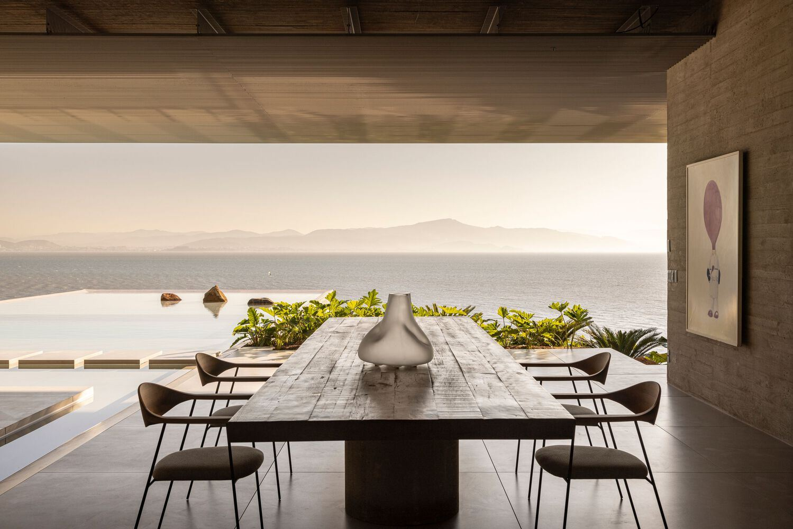
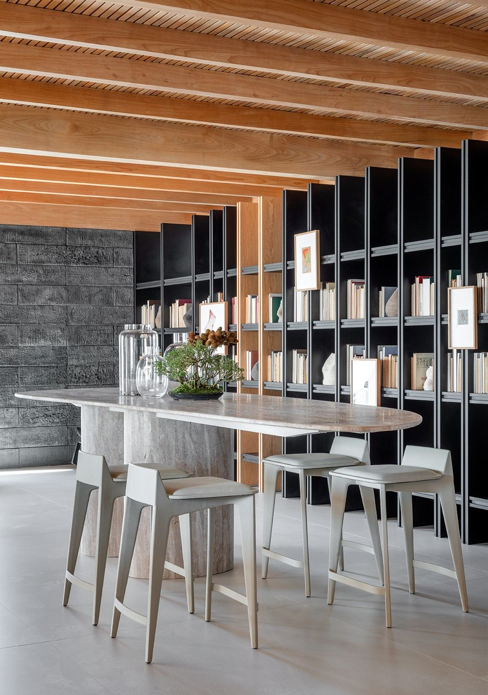
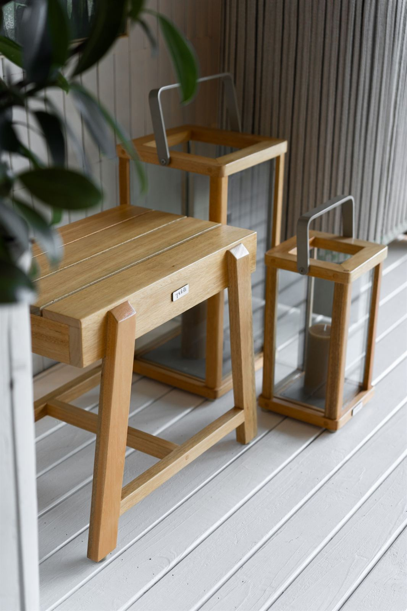
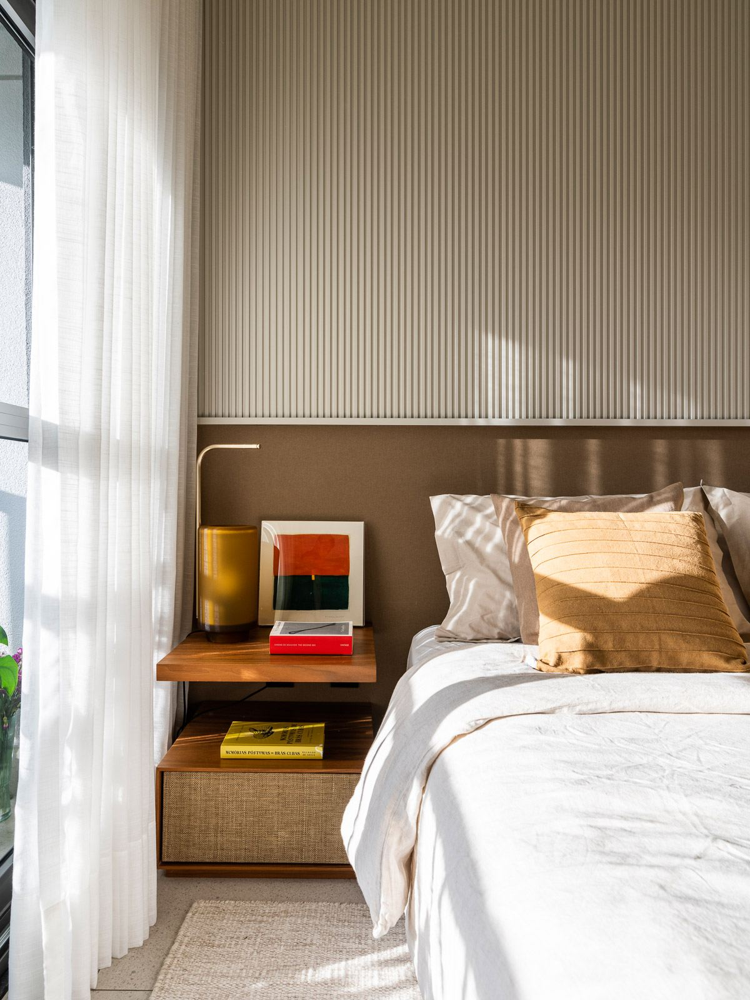
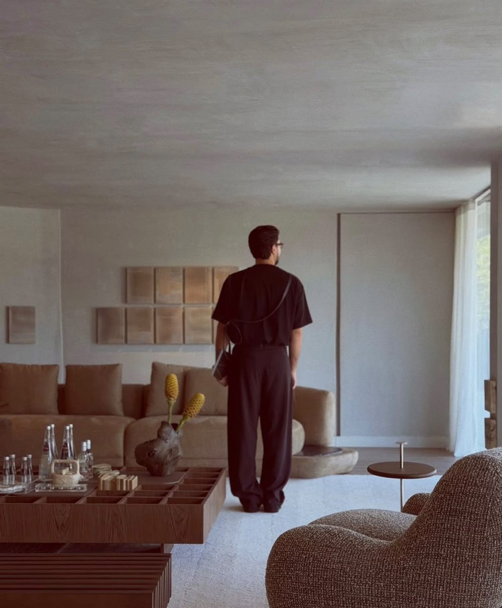

Ficha técnica
Ficha técnica

Preparação do ambiente para as fotos do projeto: escolha e locação de objetos, arranjos, livros e tecidos, e montagem no dia da foto.

Ambientação de espaços em mostras de decoração, como a CASACOR, da curadoria das peças à montagem final.

Ambientação de showrooms, lojas e estandes de eventos, da escolha das peças à montagem.

Ambientação de unidades e áreas comuns de empreendimentos, como apartamentos decorados, halls e espaços de convivência.

Desde 2021, Shylton Mavie constrói sua trajetória na arquitetura a partir de um olhar que vai além das formas e funções. Com uma percepção singular dos espaços, encontra na arquitetura a possibilidade de transformar ambientes em experiências, traduzindo conceitos, personalidades e emoções em cada projeto.
Fora dos padrões convencionais, seu trabalho carrega uma identidade própria, marcada pela criatividade, pela sensibilidade e pela capacidade de enxergar possibilidades onde muitos veem apenas espaços.
Seu diferencial está em compreender que a arquitetura não se limita ao que os olhos alcançam. Está na atmosfera que se cria, na vida que acontece e na conexão que cada ambiente estabelece com as pessoas. Com uma energia cativante e um olhar atento aos detalhes, busca dar alma aos espaços, tornando-os únicos, autênticos e cheios de significado.
A arquitetura ganha vida quando deixa de ser apenas espaço e passa a ser sentimento.